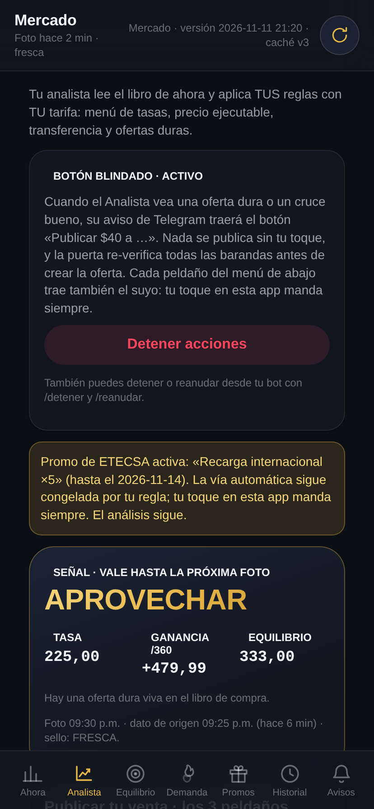
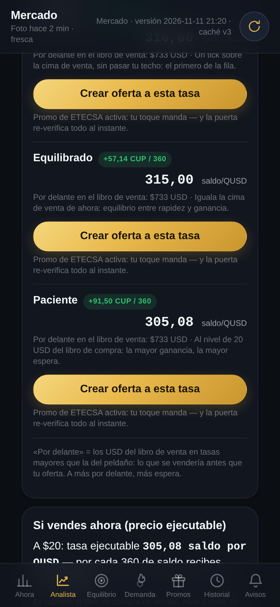
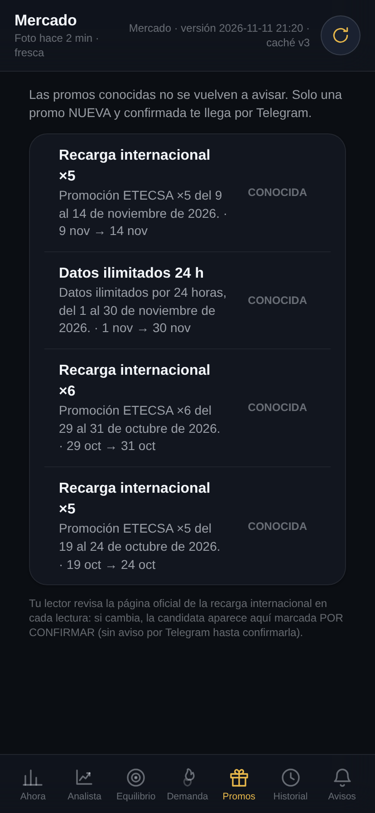

Ojo web · Mercado v3 — tanda de los 2 defectos (2026-11-11, ~21:35 hora de Ernesto)
Capturas de la app ya publicada (caché v3) a ancho iPhone XR (414×896), con datos vivos del lector.
Auditoría automática de desbordamiento en las 7 pantallas: ancho del documento = 414 = ventana y
cero elementos fuera de ancho en todas. Lectura de defectos: sin textos cortados; las descripciones
de Promos envuelven completas (3 líneas); los 3 peldaños del Analista traen su botón dorado
«Crear oferta a esta tasa» con la nota de promo «tu toque manda».

Analista (arriba). Tarjeta de control con la frase nueva del botón por peldaño; aviso de promo con el texto del flag en false («tu toque en esta app manda siempre»); señal APROVECHAR por la dura a 225, con sus dos relojes y sello FRESCA.

Analista (menú). Los 3 peldaños (Inmediato 316 · Equilibrado 315,00/+57,14 · Paciente 305,08/+91,50) con su botón «Crear oferta a esta tasa» y la nota de promo bajo cada uno. (El borde superior caza la cabecera fija a mitad de scroll: es el gesto de la captura, no un defecto.)

Promos. La descripción que Ernesto vio cortada («Promoción ETECSA ×5 del 9 al 14 de no…») ahora se lee entera: «Promoción ETECSA ×5 del 9 al 14 de noviembre de 2026. · 9 nov → 14 nov», y lo mismo en las demás promos.